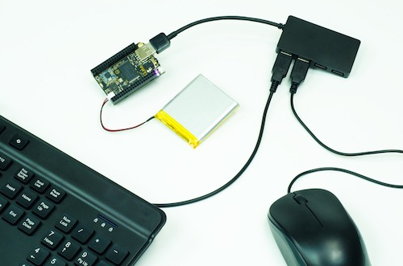
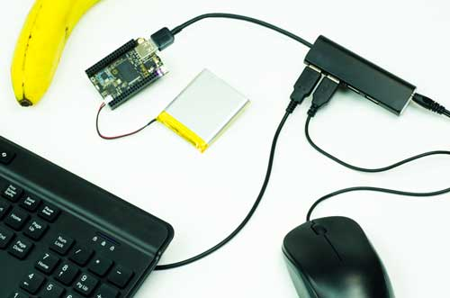
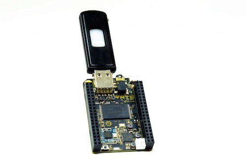
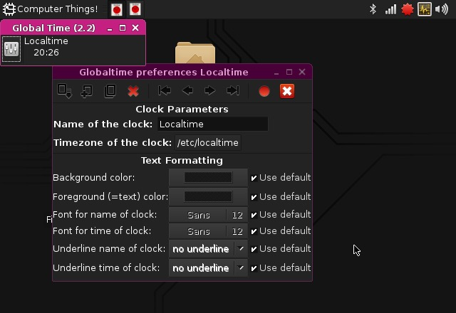

Introduction
Welcome to Next Thing Co documentation.
Proposed Table of Contents for CHIP Documentation
A hierarchy of topics and subjects. You may just want to look at the table of contents on the right, since the indentations make it easier to see the tree.
Welcome to DERP
We made a computer. A $9 computer. And every computer needs an operating system.
Ours is DERP: Debian Environment for Radical Products. Grab an old TV (or any screen with a composite video input), a keyboard and mouse, and stick some electricity in the micro USB port. In a few seconds, you’ll have CHIP’s DERP on your screen, ready for your commands.
CHIP is built for making - we’ve packed a powerful processor, 8 GB of storage, stereo audio, video out, and lots of connections for playing and making your projects and products.
DERP is built for doing. You probably didn’t expect to be able to browse the ‘net, send email, play video games, listen to music, write a novel, watch a video, or learn programming. And because it’s based on the popular linux debian, if there’s something you need, you can probably install it.
So how do use this thing? Read on and learn how much you can do.
Start CHIP
First things first. Let’s boot CHIP into DERP and do some computer things! Add some power, then we can turn on the wireless network, and even connect a bluetooth keyboard to get rid of those annoying cables.
Power up
The single most important thing to using any electronic device is getting electricity to the right places. This tutorial covers how to turn CHIP “on”. This might seem so straightforward that it doesn’t deserve several paragraphs, but CHIP is pretty clever, so there’s actually a few things worth knowing.
What’s It Need?
In general, CHIP is powered by a 5-volt source like a USB port or phone charger, and draws about 300mA peak (at boot time), runs on around 100mA, and rests with around 80mA with the processor totally unloaded. This may be more than you need to know if you just want to plug it in to the wall, but, as you build projects with CHIP, you’ll be happy to know there’s a lot of ways to get the electricity flowing.
How Do I Know CHIP Is On?
CHIP is silent. It doesn’t take much energy, so it’s not very hot. It has no discernible smell. As a result, many of your senses are not great indicators that it is working. There are two LEDs next to the USB micro connector. When CHIP is on, you should see the PWR LED light up nice and bright.
Power From The Wall
The CHIP’s microUSB connector is used to provide power from most any USB power source. USB wall-wart adapters are probably littered all over your house. If for some reason you don’t have one, you can buy one from us or any electronics retailer. Just plug a USB-A-to-microUSB-B cable (that’s the same cable most phones, tablets, and whatnot use to charge) into the wall-wart and CHIP, and you’ll see the PWRLED light up (forgive the underexposure, but you can see a small pink LED under the green one, and FWIW, LED colors may be different on your CHIP!).

Power From a Battery
CHIP can also be battery powered. Specifically, any single cell (1S) 3.7V Lithium Polymer (LiPo) battery with a 2-pin JST-PH 2.0mm end can be connected to the JST-PH socket.
The JST can only plug it in one way, so if you are having a hard time lining things up, turn it around! Needless to say, do not force the battery connector into the socket if something doesn’t feel right!
What’s really great is that if you plug in to a charger and plug in a battery, the battery will charge - all the power management is on CHIP itself. Roughly, it takes about four to six hours to charge a 3000 mAh LiPo battery from a 5V 1A power source. Also, our delightful little Power Management IC, the AXP209, handles pass-through power, so while on and charging a battery, C.H.I.P. is basically running on a un-interruped power supply – If charge power fails, C.H.I.P. seamlessly switches onto battery power without shutting off.
Connect to WiFi
Use the Desktop environment to connect to a WiFi network.

Connect Bluetooth
Use the Desktop environment to connect a bluetooth device.

Terminal for Beginners Glossary
One of the great things about Linux is the terminal application. While it may look unfriendly and terse, if you want to really extend the capabilities of CHIP, you’ll often find yourself in the terminal. If you’re a beginner, here’s a quick reference of some really important and common commands.
- cd
- ls
- apt-get
- pwd
- grep
- | (pipe)
- < (redirect)
- cat
- less
- nano
Connecting Accessories
CHIP has a lot of connectors, some for building, some for doing normal computer things. This section covers the normal computer things, like audio, video, and input.
Powered USB Hub
You’ll find that a simple powered USB hub is pretty essential if you want to use a lot of USB devices with CHIP. Not only is there only one USB port (keeping CHIP nice and small), but CHIP’s micro USB power port can only provide so much power for the USB port. So if you don’t have a powered USB port, you’ll quickly max out power if you attach too many accessories.

Keyboard and Mouse
Many keyboards have USB hubs built-in, so you can attach a mouse to the keyboard, attach the keyboard to CHIP, and immediately have control. However, it’s likely the two will draw too much current, so you’ll want to connect to a powered hub before you connect.

Bluetooth Keyboard and Mouse
Of course, CHIP has built-in bluetooth, so if you want to use a keyboard and mouse, you can keep your USB port free for other things (like mass storage or a MIDI controller!) and keep your desk clean. See connecting to bluetooth section
Monitor
In the spirit of keeping things small, CHIP packs all the audio and video into a small TRRS (Tip-Ring-Ring-Sleeve) connector. Built-in video output is restricted to standard composite video resolution of 640x480. (Higher resolutions can be achieved with the upcoming VGA and DVI output accessories.) We also provide a breakout cable that lets you connect the audio and video to a TV (or other electronics) using RCA jacks.

Headphones
The audio and video connector on CHIP can be dedicated to audio output suitable for headphones or connecting to an amplifier for filling a room or public space with glorious sound. Just connect a standard 3.5 mm (1/8") TRS audio plug into CHIP’s a/v jack.

Microphone
Currently non-op - no driver.
USB Storage
If you have files that you want to modify, use, or transfer to CHIP’s internal storage, you can attach a USB thumb drive, card-reader, or hard drive. Open the file manager and access the files.

USB Audio
CHIP can use Class-compliant USB audio devices. A popular, inexpensive choice for small computers are USB dongles based on the C-Media chipset. Search your favorite online store for “C-Media USB audio”. These have been tested successfully with CHIP and can often be purchased for less than $10. Some good resources for linux and audio compatibility are:
- http://wiki.linuxaudio.org/wiki/hardware_matrix
- http://www.alsa-project.org/main/index.php/Matrix:Main
Many of the drivers have not been tested with CHIP - as CHIP matures, more information will be available. For now, we recommened USB Class-compliant or “plug-and-play” audio devices.
Battery and Charging *
Like any modern laptop, CHIP can run and charge any single-cell LiPo battery. Read more in the powering CHIP section.
Settings
WiFi
Description of using GUI desktop to change WiFi settings.
Bluetooth
Screenshot and description of using GUI desktop to change Bluetooth settings.
Sound
Screenshot and description of using GUI desktop to change Sound settings.

Display
Screenshot and description of using GUI desktop to change Display settings.

Time and Date
Screenshot and description of using GUI desktop to change Time and Date settings.

Printing
Screenshot and description of using GUI desktop to change Printer settings.
Mouse Sensitivity
Screenshot and description of using GUI desktop to change Mouse Sensitivity settings.
Launching Installed Apps
DERP comes prepackaged with many open-source applications to get you started. It’s easy to launch an application.

AbiWord
A word processor.
Maelstrom
A game
Alex 4
A retro game

Web Browser
Ice Weasel is like Firefox, just cooler. Hah.

Video Player
Plays video.
Quake
A video game
Terminal (commandline)
The life blood of linux.
Install and Update Software
Synaptic Package Manager
Launch the Synaptic Package Manager to find and install new software.
This is a graphical interface to the apt-get command and will install software for DERP and other debain-based systems.
Auto Update
CHIP will automatically look for any updates and alert you if updates are available for your existing software and DERP operating system.
apt-get
If you are using the commandline, you will use apt-get to install and update new software.
If you are new to apt, some important commands to know:
shell
apt-get update
shell
updates the information from repositories, so any installs will be the latest package
shell
apt-get upgrade
upgrades any installed packages.
apt-get install <name of package>
to install a package and any of its dependencies.
shell
apt-get remove <name of package>
will remove a package and any dependencies not used by other packages
shell
apt-get purge <name of package>
will remove a package and any dependencies not used by other packages along with all settings data
shell
apt-cache search <search terms>
will search through the package repositories for names and descriptions that include your search term.
Chrome-based Interface
Design Decisions
There’s a reason why CHIP is the way it is.
FAQs
CHIP Hardware
Parts and Pieces

Wireless
WiFi
Bluetooth
Connectors
USB
Audio
USB On The Go
Pin Headers
Diagrams/Schematics
Open Source: where to get
Making Stuff
GPIO
From Commandline *
Switches
LEDs
Relays
Continuous sensors (temperature, pots, FSR, photoresistor, etc)
Headless CHIP
One of the most amazing features of CHIP is that it’s insanely simple to use it as small, wireless computer. Low power requirements, battery powered with charge management, and both WiFi and Bluetooth connectivity makes CHIP easy to run as a headless, autonomous machine. Of course, you’ll still want to access it and control it without a monitor or keyboard. You can control CHIP with another computer and a serial or network connection. Here’s how you do this. *